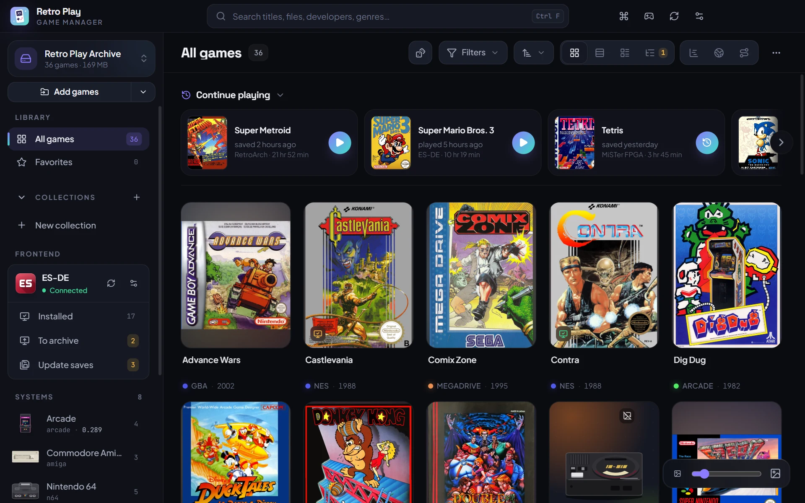

Add games
Got a folder of ROMs? The app copies them into the archive, and first shows you what it will do.

- Click Add games, at the top of the sidebar.
- Choose the platform: type a few letters to find it.
- Click Choose the folder and pick where the ROMs are. If the folder is named after the system (e.g.
snes), the platform is picked for you. - Check the summary (games, space, files left out) and press Copy.
- You can leave the copy in the background or stop it: the games already copied stay.
- Done. Now start scraping to get titles, covers and videos: much of the app needs them.
- The games are in the sidebar, under their system.
Good to know
- Only the files ES-DE recognises for that platform are copied.
- A game on several discs becomes one game. Games with the same title become versions of one game.
- Games already in the archive are not touched.
- The arrow next to Add games also imports a
.zipexport, or the games only the frontend has.
Move instead of copy
Turn on Move the files instead of copying them and the games’ files leave the folder: they stay only in the archive. The app asks you first, because if the move doesn’t complete you could lose data.
Arcade games
For arcade and mame you choose which ROM Set the games go into.